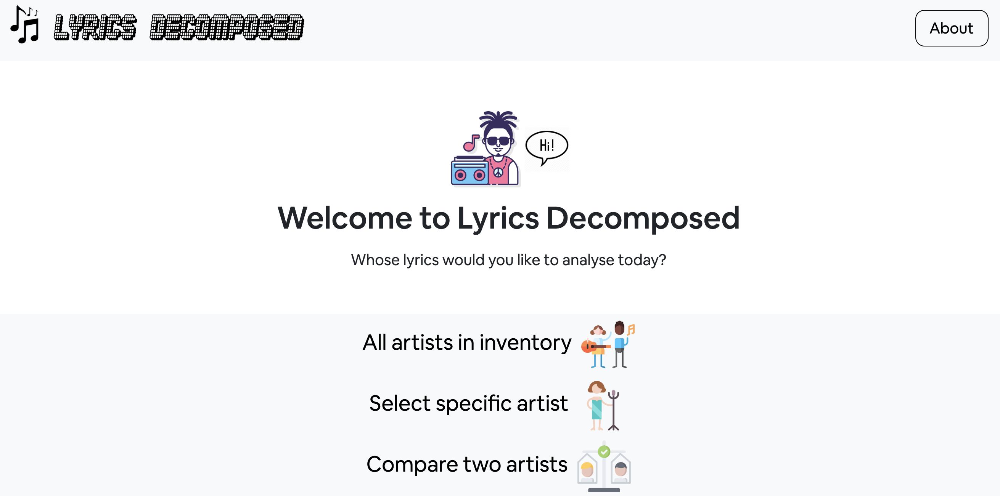
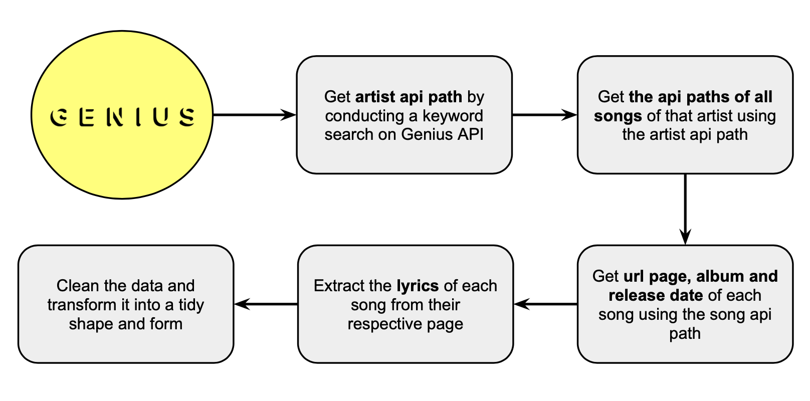
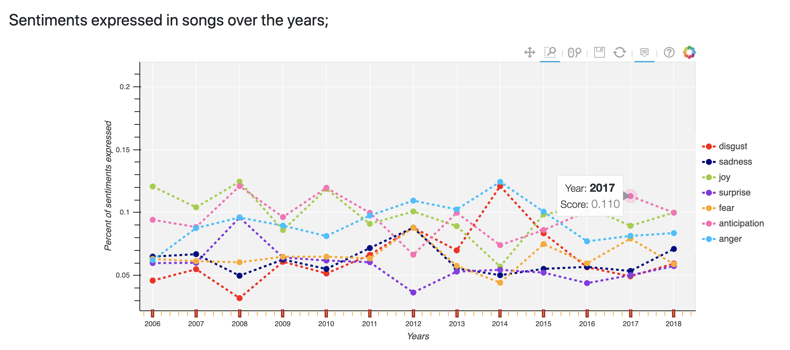
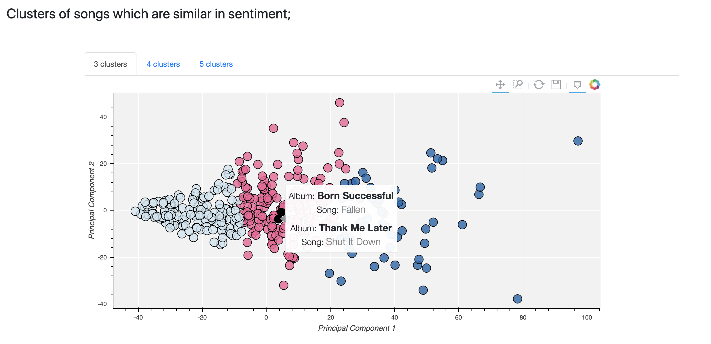

I am graduating from the data science bootcamp at Bitmaker General Assembly in Toronto in a few days, and have spent the past 2 weeks working on the project that the entire program culminates to: the capstone. This blog post is going to be an overview of my capstone project and the main steps involved in building the final product.
The source code for the project is available on my Github.
My capstone is a web application that allows users to analyze the topics, polarity and sentiments of song lyrics. The application has 3 main functionalities:

This was an end-to-end data project, involving every step of the data science process from data acquisition to deployment in the form of an application a user can interact with. Here is an overview of the main steps:
The web scraping component of the project had a lot of moving pieces. At this stage, my idea was still very much in the works, but one thing I knew for sure was that I wanted the application to be able to take any artist and deliver results. As such, for the web scraping part, it was important that I designed a process that would be automated and could scale.
I was pretty lucky because Genius.com has an open API and a wide inventory of lyrics. Unfortunately, the lyrics data isn't available on the API itself, so I had to come up with somewhat a creative way to go from having the name of the artist I want to scrape to having the lyrics for all of his or her songs that exist on Genius.com.
This diagram summarizes my process:

After creating this pipeline and scraping ~20 artists, I realised that constantly having to enter the name of an artist to scrape was getting tiresome. I was also running out of artists that I could think of off the top of my head and was constantly having to google for popular artists. So I decided to also scrape a list of artists I could scrape, and make the original script run continuously on a loop until every artist on the list was scraped. The Year End Top 100 artists chart of Billboard was an obvious choice for this. I scraped the top artists of every year since the inception of the chart in 2006. Getting all the lyrics took ~2-3 days of almost non-stop scraping. Shoutout to Genius.com for not putting a limit on number of API requests users can make! <3
Having all this data inspired the idea for what became the 3rd component of my project - analysing all artists' lyrics all at once and clustering artists based on the sentiments of their lyrics.
pandasnumpyrequestsBeautifulSoupregex dotenvFor the sentiment analysis component, I used the open-sourced NRC Word-Emotion Lexicon, a crowdsourced list of ~15,000 English words and their associations to one or more of 8 basic human emotions (anger, anticipation, fear, disgust, trust, surprise, sadness, joy). With this lexicon at hand, my approach to extract sentiments was as follows:
Though the NRC lexicon included positive/negative labels along with sentiments, I was able to get my hands on a less well known lexicon called VADER, also open-sourced, which seemed to be a better option for polarity analysis due to the following reasons:
compound score, which yields a normalized and weighted score for the level of positivity or negativity of a given sentence. The compound score ranges between -1 (most extreme negative) and 1 (most extreme positive)Finally, to identify the prevalent themes in songs, I used Latent Dirichlet Allocation (LDA) - an unsupervised technique that enables the discovery of topics in a collection of documents. LDA imagines that each document (a document is a song in this case) is described by a distribution of topics, and that each topic is described by a distribution of words. Here is a silly example of how it works under the hood:
LDA would find something like:
It is then upto us humans to realise that topic 1 is probably about shopping, and topic 2 is probably about spilling food and beverages on clothes.
pandasnumpynltkvaderSentimentwordcloudgensimsklearnI wanted to see which songs were similar in sentiments to one another, and which artists were similar in the overall sentiments expressed considering all of their lyrics.
To cluster songs, I represented each song with its normalized sentiment composition vector (eg. 30% anger, 20% sadness, 5% disgust..). To cluster artists, I took the mean of all the sentiment scores of their songs, and followed the same strategy. I included all 8 basic human emotions plus positivity and negativity from the NRC Lexicon in the vectors and used Principal Component Analysis to reduce vector dimensions from 10 to 2 so I would be able to visually assess the performance of different clustering algorithms.
After giving a host of clustering algorithms like K-Means, Mean Shift, DBSCAN and Hierarchical clustering a try with a variety of hyperparameters, the groupings produced by K-Means seemed to make the most sense. The main disadvantage of Mean Shift, DBSCAN and Hierarchical clustering was that the respective hyperparameters that yielded reasonable groupings varied significantly from one artist to the next. This was problematic since I wanted my application to be able to output meaningful results for any given artist. 3, 4 and 5 number of neighbors with K-Means seemed to consistently yield logical groupings for the clustering of songs. I eventually decided to show all three number of neighbors in the app, and let the user decide which one was most appropriate for a given artist.
For the all artists section, though ensuring results would match any given input was no longer a concern, K-Means with 4 neighbors, again, seemed to be the best performing algorithm since the categorization produced was the most well aligned with the musical genre of artists.
pandasnumpysklearnThis part of my project was very important to me because I love data visualisation, and I think interactive visualisations are the most effective way to communicate information on data. After doing a bit of research, it seemed that Bokeh was the best python data visualisation library for creating interactive charts on web apps. I had never used Bokeh before and so I had to learn how it works, which was a fun challenge. Here is an example of the sentiment and clustering charts I created, for Drake (only appropriate since I am writing this blog post from Toronto):
 
pandasnumpybokehhtmlTo build the web app, I used Flask, a micro web framework written in Python - called micro because it doesn't require particular tools and libraries that full-stack web development frameworks like Django do. It's lightweight and so is perfect for the purposes of non-web developers like myself creating simple applications to showcase their work.
Each page on the app is defined by a flask function and rendered from a html template page. Variables are passed from python onto HTML with jinja2, and pages are prettied up with css and a tiny bit of javascript.
As someone completely new to HTML, CSS and javascript, this part was a lot of trial, error and googling. But I actually really enjoyed the experience! Creating a tangible product that I can see and interact with was really satisfying, and I'm planning to continue to learn some more web development on the side. I'm particularly interested in learning javascript because of d3.js - a really powerful data visualisation library which some of my favourite websites like The Pudding and FiveThirtyEight use.
pandasflaskjinja2htmlcssjavascriptbootstrapIt turns out that some strange things are stored as lyrics on Genius's API, like awards ceremony speeches, interviews, and even instagram statements. For example:
Also, many songs have duplicate pages because songs sung in concerts, live sessions or at a particular event sometimes get stored as an original song. See below:
Filtering these kind of pages from the data was challenging. I had to manually go through numerous lyrics to identify what kinds of patterns were showing up in the urls of pages that were duplicates or non-song texts and define rules to remove pages whose urls included words which hinted that the page was a duplicate or non-song text.